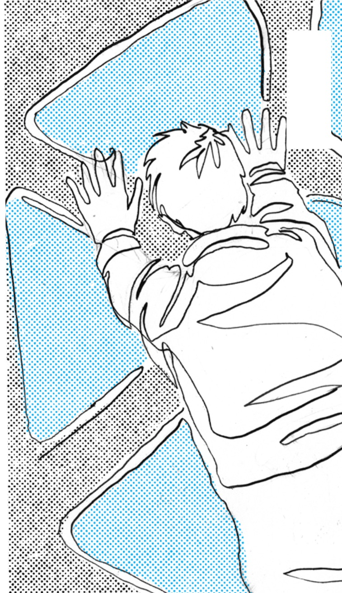

Kapitel 5
Playbookens kärna – fyra drivkrafter
Lärande är idag som vi nu alltmer förstår, komplext. Vår omvärld gör att vi inte kan tänka lika linjärt som vi länge gjort i många olika sammanhang, och lärande är inget undantag. Det räcker inte med kunskapen vi får av en kurs, utbildning eller lektion, lärandet behöver ske på fler ytor, fler sätt och med andra fokus. Vi ser vilka utmaningar vi har att möta i både vårt närområde och på planetär nivå, och vi kämpar för att hitta nya sätt att ta oss an dem på sätt som fungerar i den komplexitet som omvärlden medför.
I det här kapitlet får du bekanta dig lite mer och översiktligt kring de drivkrafter som våra forskare koncentrerade sitt arbete utifrån; nyfikenhet, inre motivation, framplockning och psykologisk trygghet. Det är fyra krafter som vi har följt, testat, lekt med och fördjupat i hela projektet. De har valts ut för att de ger avtryck i forskningen om livslångt lärande och för att vi kan se hur de påverkar även i verkligheten, på jobbet, i skolan, i vardagen. Här får du en introduktion till dem och hur de tillsammans bildar en kompass för all lärandedesign som följer.
Det här kapitlet är alltså navet i hela vårt arbete och i playbooken. Här samlar vi den praktiska och forskningsnära grund som har format vårt sätt att tänka, testa och utveckla lärande. Det är utifrån dessa vi har designat utforskande, interventioner och insatser, de återspeglas i studier, enkäter, samtal, hackathons, workshops, kurser, verktyg och prototyper. De har blivit vårt gemensamma språk och vår metod för att röra oss bort från ytliga lärinsatser och mot ett lärande som sätter sig i kroppen och bär längre än till nästa deadline.
Men varför just dessa fyra?
När projektet Läran att lära startade fanns ingen färdig modell. Vi visste att vi ville ta oss bort från mekaniska modeller och belöningssystem – men vad ville vi ta oss till? Forskargruppen – Jessica Körning Ljungberg, Daniel Sörman och Elisabeth Åström – började med att kartlägga både aktuell forskning och praktisk erfarenhet. De letade inte efter trender, utan efter stabila, tvärvetenskapliga förklaringar till varför lärande sker och varför det ibland inte gör det.
Ganska snart utkristalliserades dessa fyra delar i allt från neurologisk forskning till psykologiska skalor och pedagogisk praktik. De pekade mot de krafter som får människor att vilja förstå, orka fortsätta, våga prova, minnas bättre och känna mening. Nyfikenhet väcker intresse och riktning mot det okända
Inre motivation ger energi att fortsätta lära utan yttre krav
Psykologisk trygghet gör det möjligt att tänka högt, göra fel och växa
Framplockning fördjupar förståelse genom att aktivera minnet och frigör utrymme för att koda in ny kunskap
Varje drivkraft har sin egen roll att spela. Nyfikenhet är en impuls som vi behöver trigga, skapa förutsättningar för att kunna få syn på och känna, och medveten design för att hålla kvar. Motivation är ett enormt vetenskapligt fält med många facetter, i relation till lärande finns det inom det här fältet flera saker att utforska, kring vad det är som väcker din inre motivation. Trygghet är en absolut förutsättning för lärande eftersom en rädd hjärna låser möjligheten att ta in det som ska läras. Framplockning är den ganska ofta förbisedda motorn i att faktiskt befästa kunskap.
Kombinationen mellan dessa fyra är också avgörande. Framplockning kan med fördel ske med hjälp av den så kallade testeffekten*, men den kan störas ut om testsituationen eller provet känns otryggt, skrämmande eller alltför fokuserat på bedömning.
"Nyfikenhet dör i det förutsägbara, men frodas i det lagom okända", som forskaren Daniel Sörman uttrycker det. Hans arbete visar att det inte finns en sorts nyfikenhet utan flera. Det är en skala med olika delar, från den kognitiva nyfikenheten som driver oss att förstå, till den sensoriska eller upplevelsebaserade nyfikenheten, och vidare till den empatiska nyfikenheten som öppnar för samspel och samarbete. I projektet blev det här en nyckel till att tänka mer mångdimensionellt kring vad som faktiskt sätter lärande i rörelse.
Professor Jessica Körning Ljungberg har i sin forskning visat hur reflektion, särskilt i dialog med någon (eller med sig själv som du kommer få läsa mer om snart) – en mentor, en kollega, en avatar – fördjupar både motivation och förståelse. Reflektion hjälper oss att förstå vilka vi är, varför vi gör som vi gör och hur vi kan förändras. Det är på ett sätt i reflektionen vi blir till som människaor. Jessica menar att när vi vågar formulera vad vi vill, vad vi inte förstår och vad vi bär på, då sker något i oss som inte går att återskapa i passiv konsumtion av kunskap.
För forskaren Elisabeth Åström blev det särskilt tydligt hur nyfikenhet och självreflektion hänger samman med positiva attityder till livslångt lärande. Hennes analys av över 700 svar i en enkät, visar att där känslan av sammanhang och syfte saknas, där sjunker också lärviljan. Men när vi får välja väg, se våra framsteg och känna tillhörighet, då väcks samma vilja till liv.
Dessa forskningsröster, tillsammans med alla praktiker, chefer, handledare, kommuner, företagare och deltagare vi arbetat med under resans gång, har hjälpt oss att förstå att våra fyra drivkrafter inte är lösningen, men att de definitivt är nycklar. Och med rätt nyckel kan man låsa upp miljöer, vanor och kulturer där lärandet får fäste. I vår playbook löper drivkrafterna som en röd tråd, med hjälp av intervjuer, exempel, forskning och konkreta designprinciper. Du kan välja att dyka ner i dem direkt, eller bara stanna här ett tag – i det gemensamma som förenar dem. Här hittar du inte checklistor av vanligt format, men vi försöker skicka med dig insikter, erfarenheter och ett och annat råd. Du hittar också ett sätt att se på lärande som något som inte är enkelt. Utan som något mänskligt, därmed komplext, och alldeles nödvändigt.
